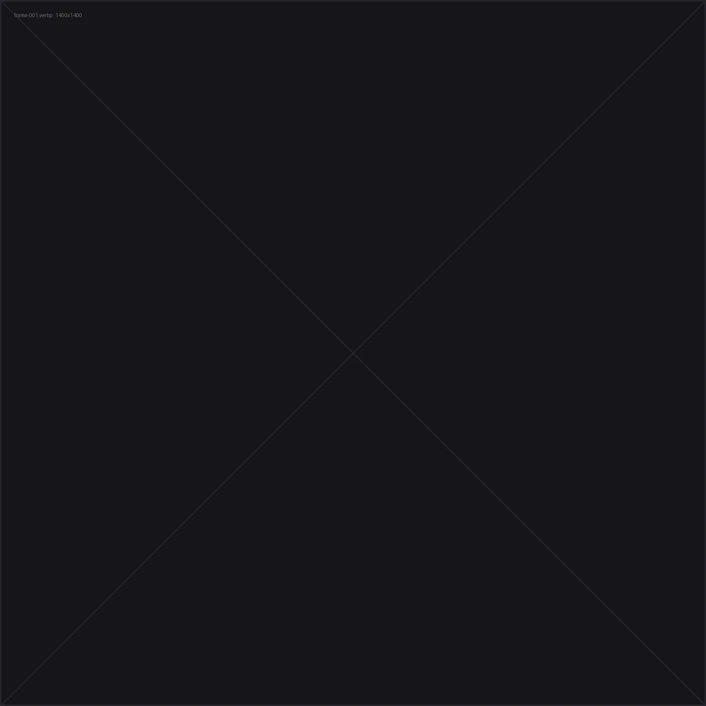

Chaise longue
Low, soft-shouldered lounge chair on a solid timber plinth.
- Cameras
- Done in 3dsMax
- Postproduction
- Done in 3dsMax composition, Photoshop + AI
—
Interior scene.
01
The shipped mesh, in your browser.
Orbit, zoom, toggle the wireframe.

Drag to rotate · 36 frames
Loading…